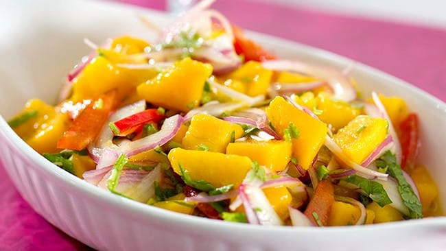

Pastel de Chucho
Una especialidad de la isla que consiste en capas de chucho (raya) cocido y sazonado, intercaladas con plátano maduro frito y cubiertas con queso rallado.

Ceviche Margariteño
Un plato que destaca por su frescura y sabor, hecho con pescado fresco marinado en jugo de limón, cebolla, ají dulce, cilantro y un toque de ajo.

Piñonate
Un sabroso y tradicional dulce margariteño hecho con lechosa verde, melao de papelón y concha de naranja cajera.
Pastel de Chucho
Una especialidad de la isla que consiste en capas de chucho (raya) cocido y sazonado, intercaladas con plátano maduro frito y cubiertas con queso rallado.